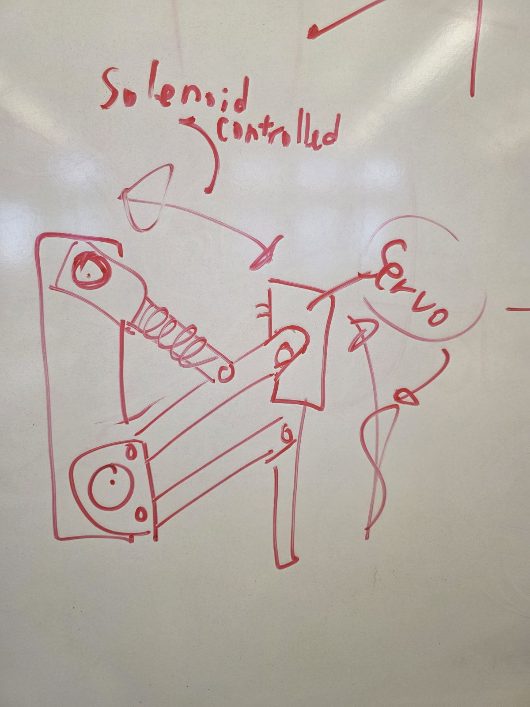
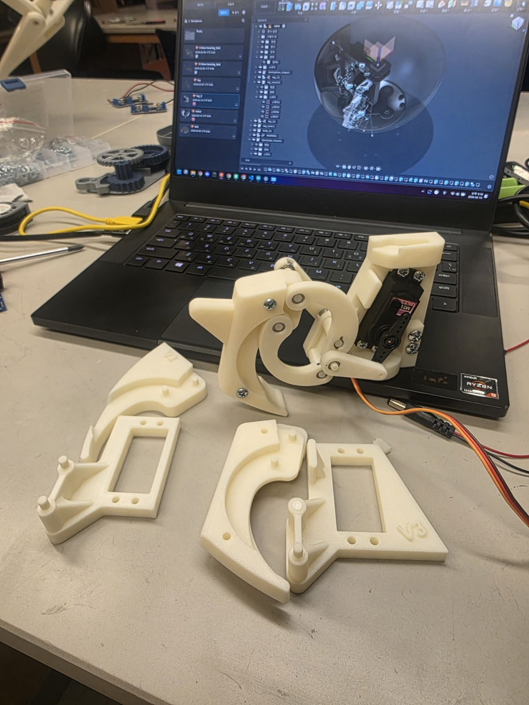

The Deceptecon robot's goal is to be able to crawl on rough terrain, and roll on flat, even terrain.

The above image shows what a 3d model of what we plan what the robot will look like (legs not shown) in the end.
Our ultimate goal for Deceptacon is to build a hybrid robot that can use both legs and a rolling "wheel" mode to follow a target moving at two different speeds- fast and slow. Deceptacon has two core behaviors: It will walk to track a slow moving target (person or object), and it will switch into rolling mode when the target begins moving faster. In order to do this, Deceptacon has a round, ball- like body that has 4 trap doors that form a smooth exterior for rolling. When walking is more efficient, the trap doors open to reveal 4 legs. Each of these legs are powered by 2 servos each. One to function it's yaw axis (side to side rotation), and another to control the pitch axis (forward and back motion). Along with these 8 servos, we will use 2 more servos to animate large "ears" at the top of our robot. These ears will act as stabilizers as it rolls, ensuring that when the robot rolls, it rolls in a straight line. In total, we will be using 10 servos- 8 for legs, 2 for ears. For sensors, we are using eight Vl53l0x LIDAR sensors around the perimeter of the robot so it can detect its environment in both walking and rolling modes. This will help Deception maintain a steady motion and void obstacles while rolling with its target. In terms of power, we are connecting a 3300mAh LiPo battery in the center of the body of the robot, slightly elevated. Due to the battery's weight, the placement will aid in the rolling function. Finally, we plan on using an Arduino Nano to control the robot, but this is subject to change if a RPi0 proves to be more useful.



This leg ↑ displays our version 1, ↑ this The image above shows what the design of the robot's legs.
leg displays version 2.


Our first sketch including ears, eyes, sensors. The very first 3d model of the leg and bottom hemisphere of robot.


So far, final model!